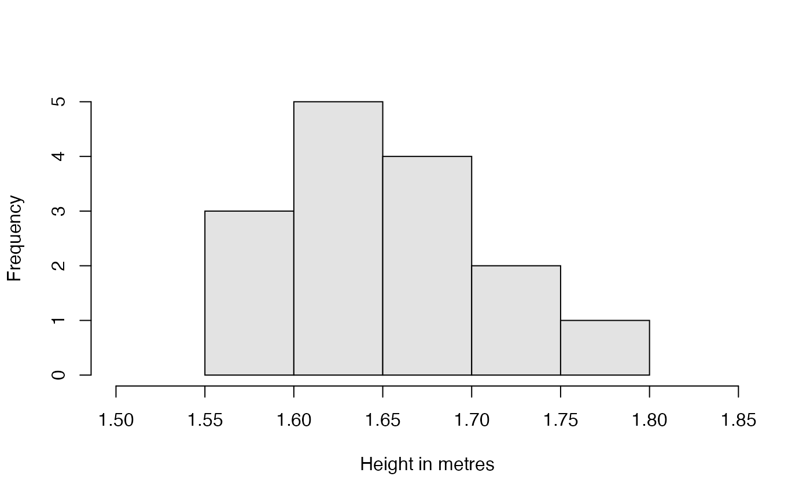
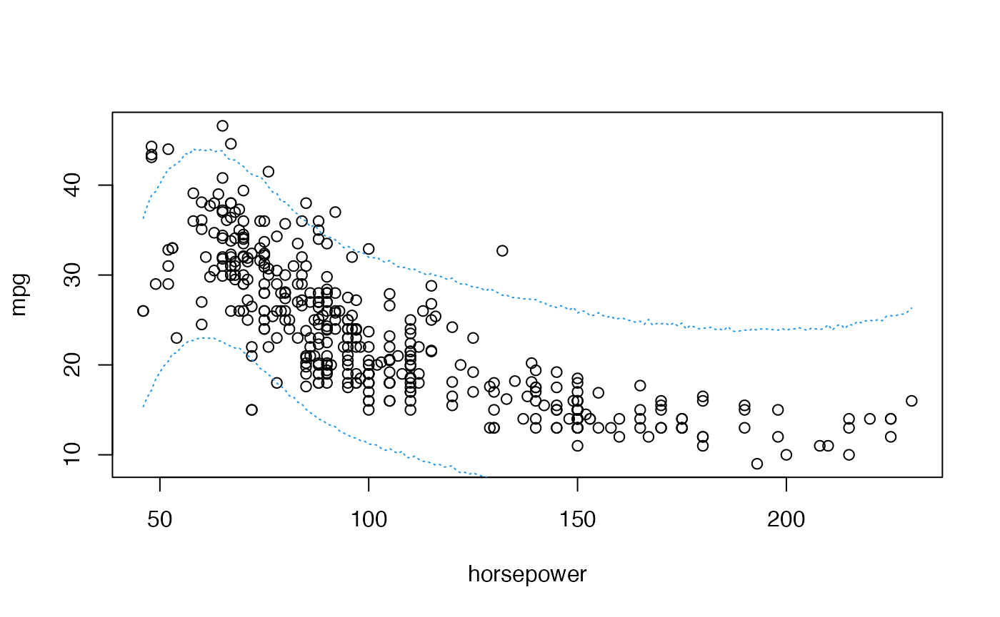

One of the most commonly used examples of Normal data are heights and weights. We want to continue this tradition. We will dedicate this practice to work with the heights of the VIBASS participants of the past editions. We start first with the height of the women.
Some VIBASS’ participants.
We have the following height data, in metres, for a random sample of \(n=15\) women participants from previous editions of VIBASS.
hwomen <- data.frame(height = c(1.73, 1.65, 1.65, 1.76, 1.65, 1.63, 1.70, 1.58, 1.57, 1.65, 1.74, 1.68, 1.67, 1.58, 1.66))We can summarize the data and represent them by means of a histogram.
summary_table(
mean = mean(hwomen$height),
var = var(hwomen$height),
quant = quantile(hwomen$height, probs = c(0, 0.25, 0.5, 0.75, 1)),
label = "Women height",
digits = 3
)| Summary | Women height |
|---|---|
| Mean | 1.660 |
| Var | 0.003 |
| S.Dev | 0.057 |
| Min. | 1.570 |
| Q25 | 1.640 |
| Q50 | 1.650 |
| Q75 | 1.690 |
| Max. | 1.760 |

The histogram obtained does not remind us much of the Normal distribution. But we know that when we work with small amounts of data, even if they are Normal, we cannot expect their histogram to look like a symmetrical bell. In fact, if we were to generate small Normal data samples, few of them would resemble the Gaussian ideal.
Let \(Y\) be the random variable that describes the height of the women in VIBASS. We assume that given the mean of the height of the VIBASS women \(\mu\), the distribution of \(Y\) is Normal with mean \(\mu\) and standard deviation \(\sigma= 0.1\).
\[Y \mid \mu \sim \mathcal{N}(\mu,\, \sigma = 0.1),\] whose conditional density function, expectation and variance are:
Recall that the Normal distribution is conjugate with respect to the Normal probability model with \(\sigma\) known. If we elicit a Normal prior distribution \(\mathcal{N}(\mu_0,\, \sigma_0)\) for \(\mu\), its density is
\[\pi(\mu)=\frac{1}{\sigma_0 \,\sqrt{2 \pi}}\, \mbox{e}^{\, \frac{-1}{2\sigma_{0}^2}\,(\mu-\mu_0)^2 }\]
with prior mean and and variance
We are going to work with a prior distribution based on the information from two of the VIBASS lecturers. This prior distribution is
\[\pi(\mu) = \mathcal{N}(\mu_0=1.70,\, \sigma_0=0.07).\]
On the basis of this distribution these two teachers think that the mean of the height of women VIBASS participants is centred on \(1.70\) m with a standard deviation of \(0.07\) m. According to it, we can compute the following percentile and probabilities
qnorm(c(0.005, 0.995), 1.70, 0.07)
#> [1] 1.519692 1.880308
pnorm(c(1.50, 1.60, 1.70, 1.80, 1.90), 1.70, 0.07)
#> [1] 0.002137367 0.076563726 0.500000000 0.923436274 0.997862633Consequently, a 99\(\%\) credible interval for \(\mu\) is \((1.52, \,1.88)\) which means that the probability that a VIBASS participant is neither taller than 1.88 metres nor shorter than 1.52 is 0.99. The probability that she is shorter than 1.50 is 0.0021, the probability that her height is between 1.60 and 1.80 is 0.9234-0.0766= 0.8468 or the probability that is taller than 1.80 is 1-0.9234=0.0766. Next we show the graphic of the density of this prior distribution.
cap <- "Prior distribution for the mean height."
m0 <- 1.7; s0 <- 0.07
curve(
dnorm(x, m0, s0),
xlab = expression(paste(mu)), ylab = "prior",
xlim = c(1.40, 2), lwd = 4, col = "dodgerblue", yaxt = "n"
)Prior distribution for the mean height.
The likelihood is a function of \(\mu\) for the data \(\mathcal D=\{y_1, y_2,\ldots, y_{15} \}\). It is defined as follows
\[\begin{align*} L(\mu \mid \mathcal D)=& f(y_1, y_2, \ldots, y_{15} \mid \mu) = \prod_{i=1}^{15}\, f(y_i \mid \mu) = \prod_{i=1}^{15}\, \frac{1}{0.1\,\sqrt{2 \pi}}\, \exp\Big\{\, \frac{-1}{2 \cdot 0.1^2}\,(y_i-\mu)^2\Big\} \\ = & \, \frac{1}{(0.1\,\cdot\sqrt{2 \pi})^{15}}\,\,\exp\Big\{\, \frac{-1}{2 \cdot 0.1^2}\,\sum_{i=1}^{15}\,(y_i-\mu)^2\Big \} \\ = &\,\frac{1}{(0.1\,\cdot\sqrt{2 \pi})^{15}}\,\,\exp\Big\{\, \frac{-1}{2 \cdot 0.1^2}\,\Big(\sum_{i=1}^{15} y_i^{2} - 2 \cdot 15 \, \bar{y} \, \mu + 15 \mu^2\Big)\Big \} \end{align*}\]
where \(f(y_1, y_2, \ldots, y_{15} \mid \mu)\) is the joint density of the \(Y_i\)’s given \(\mu\) evaluated in \(\mathcal D\). Since the \(Y_i\)’s are conditionally independent given \(\mu\), the joint density is the product of the marginal densities. In our case, the likelihood function of \(\mu\) is
cap <- "Likelihood function."
Lnorm <- function(mu, y, sigma) {
# Essentially:
# prod(dnorm(y, mean = mu, sd = sigma))
# but we make it numerically more stable working on the log scale
# and we vectorise over mu
vapply(
mu,
function(.) exp(sum(dnorm(y, mean = ., sd = sigma, log = TRUE))),
1
)
}
curve(
Lnorm(x, hwomen$height, 0.1),
xlab = expression(paste(mu)), ylab = "likelihood",
xlim = c(1.4, 2), col = "darkorange", lwd = 4, yaxt = "n"
)Likelihood function.
The posterior distribution of \(\mu\) is a Normal distribution with parameters
\[\begin{align*} \pi(\mu \mid \mathcal{D}) & = \mathcal{N}(\mu_n,\, \sigma_n), \, \text{where}\\ \sigma^2_n & =\frac{\sigma_0^2\,\sigma^2}{\sigma^2 + n \,\sigma_0^2}= \frac{0.07^2 \cdot 0.1^2}{0.1^2 + 15 \cdot 0.07^2}= 0.000587, \leadsto \sigma_n=0.0242\\ \mu_n & = \sigma_n^2 \,\Big (\frac{\mu_0}{\sigma_0^2}\, + \, \frac{n \bar{y}}{\sigma^2}\Big) = 0.000587 \Big(\frac{1.70}{0.07^2} +\frac{15 \cdot 1.66}{0.1^2}\Big) = 1.6648 \end{align*}\]
Next, we plot on the same graph the prior (in blue) and the posterior distribution (in green) of \(\mu\) \[\begin{align*} \pi(\mu &)=\mathcal{N}(\mu_0=1.70, \sigma_0=0.07)\\ \pi(\mu &\mid \mathcal D)=\mathcal{N}(\mu_n=1.6648, \sigma_n=0.0242) \end{align*}\]
m0 <- 1.7; s0 <- 0.07
m1 <- 1.6648; s1 <- 0.0242
curve(
dnorm(x, m1, s1),
xlab = expression(paste(mu)), ylab = "density",
xlim = c(1.40, 2), lwd = 4, col = "darkgreen", yaxt = "n"
)
curve(
dnorm(x, m0, s0),
lwd = 4, col = "dodgerblue", add = TRUE
)Prior (blue) and posterior (green) distributions for the mean height.
The visual difference between the two distributions is very clear: The posterior distribution has a very low variability compared to the prior (\(\sigma_n \approx 0.02\) m vs. \(\sigma_0 =0.07\) m) and is slightly shifted to the left because the posterior mean is slightly lower than the prior mean (\(\mu_n\approx 1.7\) vs. \(\mu_0 = 1.7\)).
On the basis of the posterior distribution, the two teachers now think that the mean of the height of women VIBASS participants is centred on \(\mu_n\) with a standard deviation of \(\sigma_n\) metres. According to it, we can compute the following percentiles and probabilities
qnorm(c(0.005, 0.995), m1, s1)
#> [1] 1.602465 1.727135
pnorm(c(1.50, 1.60, 1.70, 1.80, 1.90), m1, s1)
#> [1] 4.882741e-12 3.706635e-03 9.271024e-01 1.000000e+00 1.000000e+00Consequently, a 99% credible interval for \(\mu\) is \((1.6, 1.73)\), which means that the probability that a VIBASS participant is between 1.6 m and 1.73 m is 0.99. The probability that she is shorter than 1.50 m is \(0.0000\), the probability that her height is between 1.60 m and 1.80 m is \(1.0000-0.0040=0.9960\) or the probability that is taller than 1.80 m is 0.0000.
We are interested in predicting the height of Aninè, a new female VIBASS participant who has not participated in the sample of the inferential process. In this case, the posterior predictive distribution for the Aninè’s height \(Y_{16}\) is a Normal distribution
\[\mathcal{N}\Big(\mu_n, \sqrt{\sigma_n^2+\sigma^2}\Big)\]
with standard deviation \(\sqrt{\sigma_n^2+\sigma^2} = \sqrt{0.000587+0.01}=0.1029\).
It is important to note that the mean of this predictive distribution coincides with the mean of the posterior distribution of \(\mu\). However, the enormous variability of the predictive distribution, which depends on the variability of the sampling model and the variability of the a posteriori distribution, is very striking. The following figure shows the posterior distribution (in green) of \(\mu\) and the posterior predictive distribution (in purple) for Aninè’s height illustrating the previous comments.
mp <- m1; sp <- sqrt(s1^2 + 0.1^2)
curve(
dnorm(x, m1, s1),
xlab = expression(paste(mu)), ylab = "density",
xlim = c(1.40, 2), lwd = 4, col = "darkgreen", yaxt = "n"
)
curve(
dnorm(x, mp, sp),
lwd = 4, col = "purple", add = TRUE
)Predictive (purple) and posterior (green) distributions for the mean height.
We can calculate prediction intervals for the height of Aninè. A prediction interval at 95% would be
This indicates that the probability that Aninè’s height is between 1.46 and 1.87 metres is 0.95.
If we follow the same scheme as in the previous case where the variance was known, we would have a first section dedicated to the data which would be the same. The sampling model is also approximately Normal but now we will work with a Normal with unknown mean and variance.
Let \(Y\) the random variable that describes the height of the women in VIBASS. We assume that the distribution of \(Y\) is Normal with unknown mean \(\mu\) and unknown standard deviation \(\sigma\)
\[Y \mid \mu \sim \mathcal{N}(\mu,\, \sigma),\] whose conditional density function, expectation and variance are:
Our basic quantity of interest is bi-dimensional \((\mu,\, \sigma^2)\). We work in a non-informative prior scenario and use the improper reference prior distribution
\[\pi(\mu,\, \sigma^2) \propto 1/\sigma^2\]
The likelihood is a function of \((\mu,\, \sigma^2)\) for the data \(\mathcal D=\{y_1, y_2,\ldots, y_{15} \}\). It is defined as follows
\[\begin{align*} L(\mu,\, \sigma^2 \mid \mathcal D)=& f(y_1, y_2, \ldots, y_{15} \mid \mu,\, \sigma^2) = \prod_{i=1}^{15}\, f(y_i \mid \mu,\, \sigma^2) = \prod_{i=1}^{15}\, \frac{1}{\sigma \,\sqrt{2 \pi}}\, \exp\Big\{\, \frac{-1}{2\sigma^2}\,(y_i-\mu)^2\Big\} \\ = & \, \frac{1}{(\sigma\,\sqrt{2 \pi})^{15}}\,\,\exp\Big\{\, \frac{-1}{2\sigma^2}\,\sum_{i=1}^{15}\,(y_i-\mu)^2\Big \} \\ = &\,\frac{1}{(\sigma\,\sqrt{2 \pi})^{15}}\,\,\exp\Big\{\, \frac{-1}{2 \sigma^2}\,\big( \sum_{i=1}^{15} y_i^{2} - 2 \cdot 15 \, \bar{y} \, \mu + 15 \mu^2 \big) \Big\}, \end{align*}\]
where \(f(y_1, y_2, \ldots, y_{15})\) is the joint density of the \(Y_i\)’s given \(\mu\) and \(\sigma^2\) evaluated in \(\mathcal D\). Since \(Y_i\)’s are independent given \(\mu\) and \(\sigma^2\), the joint density is the product of the marginal densities. In our case, the graphic of the likelihood function of \((\mu,\, \sigma^2)\) will be
The posterior distribution of \((\mu,\, \sigma^2)\) is a bivariant probability distribution whose joint posterior density function can be expressed in terms of the conditional posterior distribution of \(\mu\) given \(\sigma^2\) and the marginal posterior distribution of \(\sigma^2\) as follows
\[ \pi(\mu, \sigma^2 \mid \mathcal{D}) = \pi(\mu \mid \sigma^2, \mathcal{D}) \, \pi(\sigma^2 \mid \mathcal{D}), \]
where
\(\pi(\mu \mid \sigma^2, \mathcal D) =\mathcal{N}(\mu_n, \sigma^2_n = \sigma^2/15)\)
\(\pi(\sigma^2 \mid \mathcal D)\) is such that \(\pi((n-1)s^2/\sigma^2 \mid \mathcal D) = \chi^2(n-1)\), where \(s^2 = \sum(y_i - \bar{y})^2 / (n-1)\)
The posterior marginal of \(\mu\) is \(\pi(\mu \mid \mathcal D)= \text{St}(\bar{y}, s^2/n, n-1)\)
In our case, the more relevant posterior distributions are the marginal ones:
The posterior marginal \(\pi(\sigma^2 \mid \mathcal D)\) is such that \(\pi(0.045598/\sigma^2 \mid \mathcal D) = \chi^2(14)\)
The posterior marginal of \(\pi(\mu \mid \mathcal D)= \text{St}(1.66, 0.003257/15=0.000217, 14)\)
We start working with the posterior \(\pi(\mu \mid \mathcal D)\). The posterior mean and scale of \(\mu\) are \(\bar{y} = 1.66\) and \(\sqrt{s^2/n} = 0.014735\) m. A 99\(\%\) credible interval for \(\mu\) is \((1.62, 1.70)\) and the posterior probabilities that the mean of the height of the women VIBASS is less than \(1.50, 1.60. 1.70, 1.80, \text{and } 1.90\) are \(0.0000, 0.0006, 0.9916, 1.0000, \text{and } 1.0000\), respectively.
ny <- length(hwomen$height)
ybar <- mean(hwomen$height)
s2 <- sum((hwomen$height - ybar) ** 2) / (ny - 1)
post_mu <- list(
mean = ybar,
scale = sqrt(s2 / ny)
)
post_mu$scale * qt(c(0.005, 0.995), ny - 1) + post_mu$mean
#> [1] 1.616134 1.703866
pt((c(1.50, 1.60, 1.70, 1.80, 1.90) - post_mu$mean) / post_mu$scale, ny - 1)
#> [1] 1.669533e-08 5.718022e-04 9.916131e-01 9.999999e-01 1.000000e+00The graphics of that posterior density is
curve(
dt((x - post_mu$mean) / post_mu$scale, ny - 1) / post_mu$scale,
xlab = expression(paste(mu)), ylab = "density",
xlim = c(1.40, 2), lwd = 4, col = "darkgreen", yaxt = "n"
)Posterior (green) distribution for the mean height.
We focus now on the variance of the sampling model. Its posterior distribution is such that \(\pi(0.045598/\sigma^2 \mid \mathcal D) = \chi^2(14)\). This is not the posterior distribution of \(\sigma^2\) but a function, \(0.045598/\sigma^2\), of it. Consequently, we can approximate the posterior distribution for \(\sigma^2\) by simulation as follows:
Next we show the approximate graph and some posterior characteristics of the posterior \(\pi(\sigma^2 \mid \mathcal D)\).
y <- seq(0, 40, 0.001)
simuchi <- rchisq(y, ny - 1)
simu.sigma <- 0.045598 / simuchi
hist(
simu.sigma,
breaks = 300, freq = FALSE, col = "gray99",
xlim = c(0, 0.02), ylim = c(0, 400),
main = NULL, ylab = "density", xlab = expression(paste(sigma2))
)
summary(simu.sigma)
#> Min. 1st Qu. Median Mean 3rd Qu. Max.
#> 0.0009764 0.0026645 0.0034218 0.0038160 0.0045062 0.0364227
var(simu.sigma)
#> [1] 2.959539e-06
sqrt(var(simu.sigma))
#> [1] 0.001720331
quantile(simu.sigma, probs = c(0.005,0.995))
#> 0.5% 99.5%
#> 0.001456033 0.011182933We observe that \(\text{E}(\sigma^2 \mid \mathcal D)=0.0038\) and a \(99\)% credible interval for \(\sigma^2\) is \((0.00147, 0.01118)\).
We propose below an individual exercise that pursues to consolidate the basic concepts that we have learned in the previous theoretical session and that we have been practising in this session.
Exercice
We focus now on the height of the VIBASS men participants.
hmen <- data.frame(height = c(1.92, 1.82, 1.69, 1.75, 1.72, 1.71, 1.73, 1.69, 1.70, 1.78, 1.88, 1.82, 1.86, 1.65))Construct a Bayesian inferential process for the mean of the height of the VIBASS men participants. Assume a non-informative prior scenario and a sampling model approximately Normal with
Known variance \(\sigma^2=0.1\).
Unknown variance.
Compare the mean of the height between men and women. Is it possible to compute the posterior probability associated to \(\mu_\text{m}-\mu_\text{w}\)? and to \(\mu_\text{m}/\mu_\text{w}\)?